指令是计算机软件和硬件的交界处，高级语言编译链接后生成大量的指令传送到CPU中完成相应的功能。本文介绍的是单周期CPU，即虽然每条指令能拆分成多条微指令，但是每条指令都必须在一个时钟周期内执行完毕。往后会介绍多周期CPU，相应的可能也更复杂一些。
模拟过程需要Xilinx ISE软件，软件包比较大，而且一般有闪退问题，win10不兼容问题，解决方法百度上都有，不慌。这里提供一个友情链接。
友情提示：ise不会提示你变量名拼写错误
MIPS32指令格式
R类型
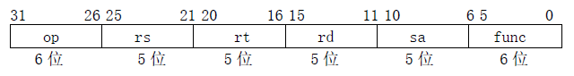
I类型
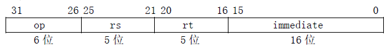
J类型
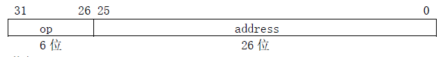
其中，
- op：为操作码；
- rs：为第1个源操作数寄存器，寄存器地址（编号）是00000~11111，00~1F；
- rt：为第2个源操作数寄存器，或目的操作数寄存器，寄存器地址（同上）；
- rd：为目的操作数寄存器，寄存器地址（同上）；
- sa：为位移量（shift amt），移位指令用于指定移多少位；
- func：为功能码，在寄存器类型指令中（R类型）用来指定指令的功能；
- immediate：为16位立即数，用作无符号的逻辑操作数、有符号的算术操作数、数据加载（Laod）/数据保存（Store）指令的数据地址字节偏移量和分支指令中相对程序计数器（PC）的有符号偏移量；
- address：为地址。
单周期CPU能执行的指令
算术运算指令
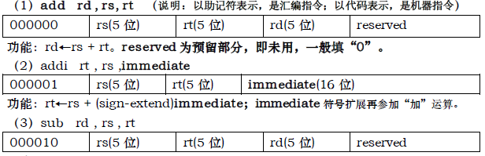
reserved为预留部分，即未用，一般填“0”。逻辑运算指令
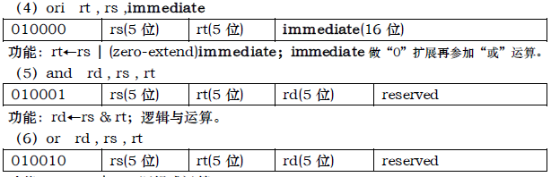传送指令
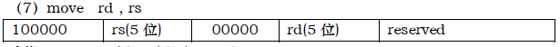存储器读写指令
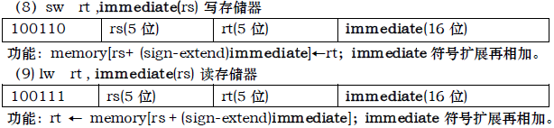分支指令
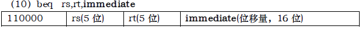
immediate是从PC+4地址开始和转移到的指令之间指令条数。immediate符号扩展之后左移2位再相加。为什么要左移2位？由于跳转到的指令地址肯定是4的倍数（每条指令占4个字节），最低两位是“00”，因此将immediate放进指令码中的时候，是右移了2位的，也就是以上说的“指令之间指令条数”。停机指令
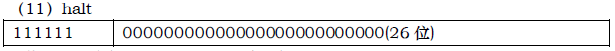
功能：停机，不改变PC值设计原理
单周期CPU指的是一条指令的执行在一个时钟周期内完成，然后开始下一条指令的执行，即一条指令用一个时钟周期完成。电平从低到高变化的瞬间称为时钟上升沿，两个相邻时钟上升沿之间的时间间隔称为一个时钟周期。时钟周期一般也称振荡周期（如果晶振的输出没有经过分频就直接作为CPU的工作时钟，则时钟周期就等于振荡周期。若振荡周期经二分频后形成时钟脉冲信号作为CPU的工作时钟，这样，时钟周期就是振荡周期的两倍。）
CPU在处理指令时，一般需要经过以下几个步骤：
- 取指令(IF)：根据程序计数器PC中的指令地址，从存储器中取出一条指令，同时，PC根据指令字长度自动递增产生下一条指令所需要的指令地址，但遇到“地址转移”指令时，则控制器把“转移地址”送入PC，当然得到的“地址”需要做些变换才送入PC。
- 指令译码(ID)：对取指令操作中得到的指令进行分析并译码，确定这条指令需要完成的操作，从而产生相应的操作控制信号，用于驱动执行状态中的各种操作。
- 指令执行(EXE)：根据指令译码得到的操作控制信号，具体地执行指令动作，然后转移到结果写回状态。
- 存储器访问(MEM)：所有需要访问存储器的操作都将在这个步骤中执行，该步骤给出存储器的数据地址，把数据写入到存储器中数据地址所指定的存储单元或者从存储器中得到数据地址单元中的数据。
结果写回(WB)：指令执行的结果或者访问存储器中得到的数据写回相应的目的寄存器中。
单周期CPU，是在一个时钟周期内完成这五个阶段的处理。
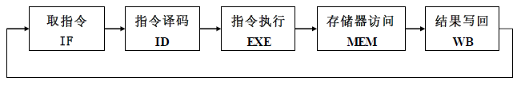
数据通路及其控制
数据通路
接下来需要了解CPU的数据通路及其控制信号，这是重点也是难点。下面这图需要完完全全弄得，理解每条指令执行过程中控制信号相应的值及其执行过程。多看几次也就不觉得很复杂了。
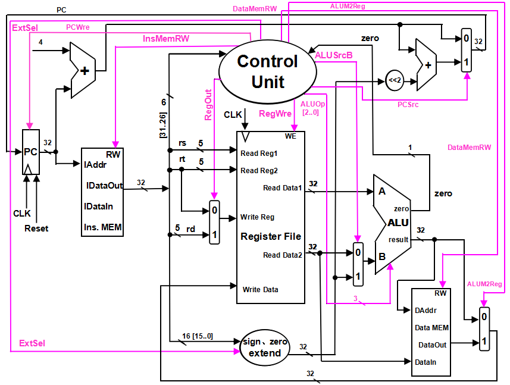
上图是基本上能够在单周期上完成所要求设计的指令功能的数据通路和必要的控制线路图。其中指令和数据各存储在不同存储器中，即有指令存储器和数据存储器。访问存储器时，先给出地址，然后由读/写信号控制（1-写，0-读。当然，也可以由时钟信号控制，但必须在图上标出）。对于寄存器组，读操作时，先给出地址，输出端就直接输出相应数据；而在写操作时，在 WE使能信号为1时，在时钟边沿触发写入
控制信号
控制信号的作用说明如下：
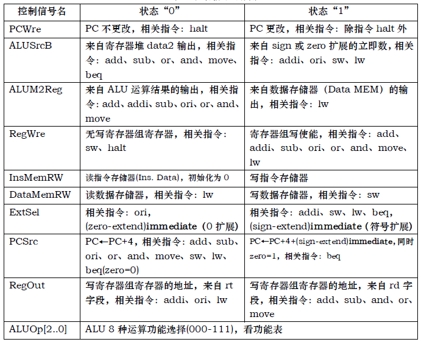
Instruction Memory：指令存储器，
- Iaddr，指令存储器地址输入端口
- IDataIn，指令存储器数据输入端口（指令代码输入端口）
- IDataOut，指令存储器数据输出端口（指令代码输出端口）
- RW，指令存储器读写控制信号，为1写，为0读
- Data Memory：数据存储器，
- Daddr，数据存储器地址输入端口
- DataIn，数据存储器数据输入端口
- DataOut，数据存储器数据输出端口
- RW，数据存储器读写控制信号，为1写，为0读
- Register File：（寄存器组）
- Read Reg1，rs寄存器地址输入端口
- Read Reg2，rt寄存器地址输入端口
- Write Reg，将数据写入的寄存器端口，其地址来源rt或rd字段
- Write Data，写入寄存器的数据输入端口
- Read Data1，rs寄存器数据输出端口
- Read Data2，rt寄存器数据输出端口
- WE，写使能信号，为1时，在时钟上升沿写入
ALU运算功能表
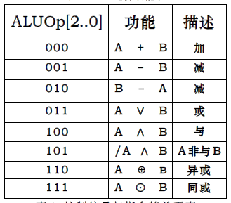
ALU:
- result，ALU运算结果
- zero，运算结果标志，结果为0输出1，否则输出0
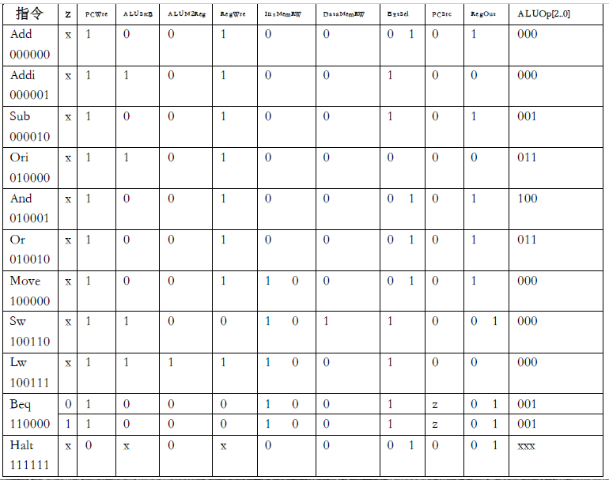
注：关系表中有两个数字的表示取两个值都行，不影响实验结果，但为了代码设计的方便，代码中使用的是右边的数值。
设计方法
采用模块设计的思想，依次设计InsMEM模块、ControlUnit模块、registerFile模块、Extend模块、ALU模块、DataMEM模块，最后设计CPU总模块，需要注意的是，PC没有独立为一个模块，免去参数传递的麻烦。
InsMEM模块
把将要执行的指令my_test_rom.txt加载到储存指令的内存中。根据PC的值返回相应的指令。
1 2 3 4 5 6 7 8 9 10 11 12 13 14 15
| module InsMEM( input [31:0] PC, output reg [31:0] instruction ); reg [31:0] mem [0:64]; initial begin $readmemb("my_test_rom.txt", mem); end always@(PC) begin instruction <= mem[(PC-4)/4]; end endmodule
|
ControlUnit模块
模块设计中，每个operation，比如ADD，对应的变量初始化为0，当需要使用时，改为1；控制信号的变量，比如PCWre，采用|操作符拼接，减少代码量又简洁，这里用到了表3中的值，用到右边的值。
1 2 3 4 5 6 7 8 9 10 11 12 13 14 15 16 17 18 19 20 21 22 23 24 25 26 27 28 29 30 31 32 33 34 35 36 37 38 39 40 41 42 43 44 45 46 47 48 49 50 51 52 53
| module ControlUnit( input [5:0] operation, input zero, output PCWre, output ALUSrcB, output ALUM2Reg, output RegWre, output InsMemRW, output DataMemRW, output ExtSel, output PCSrc, output RegOut, output [2:0] ALUOp ); parameter ADD = 6'b000000, ADDI = 6'b000001, SUB = 6'b000010, ORI = 6'b010000, AND = 6'b010001, OR = 6'b010010, MOVE = 6'b100000, SW = 6'b100110, LW = 6'b100111, BEQ = 6'b110000, HALT = 6'b111111; reg i_add, i_addi, i_sub, i_ori, i_and, i_or, i_move, i_sw, i_lw, i_beq, i_halt; always @(operation) begin i_add = 0; i_addi = 0; i_sub = 0; i_ori = 0; i_and = 0; i_or = 0; i_move = 0; i_sw = 0; i_lw = 0; i_beq = 0; i_halt = 0; case(operation) ADD: i_add = 1; ADDI: i_addi = 1; SUB: i_sub = 1; ORI: i_ori = 1; AND: i_and = 1; OR: i_or = 1; MOVE: i_move = 1; SW: i_sw = 1; LW: i_lw = 1; BEQ: i_beq = 1; HALT: i_halt = 1; endcase end assign PCWre = !i_halt; assign ALUSrcB = i_addi || i_ori || i_sw || i_lw; assign ALUM2Reg = i_lw; assign RegWre = !(i_sw || i_beq); assign InsMemRW = 0; assign DataMemRW = i_sw; assign ExtSel = !i_ori; assign PCSrc = (i_beq && zero); assign RegOut = !(i_addi || i_ori || i_lw); assign ALUOp = {i_and, i_ori || i_or, i_sub || i_ori || i_or || i_beq}; endmodule
|
registerFile模块
申明31个寄存器，0号寄存器一直当做0处理；寄存器的值在这个模块中取出，同时也可以向寄存器写值，由CU控制。
1 2 3 4 5 6 7 8 9 10 11 12 13 14 15 16 17 18 19 20 21 22 23 24 25 26 27 28
| module registerFile( input [4:0] rs, rt, rd, input [31:0] write_data, input RegWre, RegOut, clk, output [31:0] readData1, readData2 ); wire [4:0] write_reg; assign write_reg = (RegOut == 0) ? rt : rd; reg [31:0] register [1:31]; integer i; initial begin for (i = 0; i < 32; i = i + 1) register[i] = 0; end assign readData1 = (rs == 0)? 0 : register[rs]; assign readData2 = (rt == 0)? 0 : register[rt]; always @(posedge clk) begin if ((RegWre == 1) && (write_reg != 0)) begin register[write_reg] <= write_data; end end endmodule
|
Extend模块
本模块比较简单，分为零拓展或符号拓展，16位->32位。
1 2 3 4 5 6 7 8 9
| module Extend( input [15:0] imme_16, input ExtSel, output [31:0] imme_32 ); assign imme_32 = (ExtSel)? {{16{imme_16[15]}}, imme_16[15:0]} : {{16{1'b0}}, imme_16[15:0]}; endmodule
|
ALU模块
根据CU发出的控制信号ALUOp的不同，ALU对传进去的值执行不同的操作。
1 2 3 4 5 6 7 8 9 10 11 12 13 14 15 16 17 18 19 20 21 22 23 24 25 26 27 28
| module ALU( input [31:0] readData1, input [31:0] readData2, input [31:0] imme_32, input ALUSrcB, input [2:0] ALUOp, output wire zero, output reg [31:0] result ); wire [31:0] alub; assign alub = (ALUSrcB == 0) ? readData2 : imme_32; always@(readData1 or alub or ALUOp) begin case (ALUOp) 3'b000: result <= readData1 + alub; 3'b001: result <= readData1 - alub; 3'b010: result <= alub - readData1; 3'b011: result <= readData1 | alub; 3'b100: result <= readData1 & alub; 3'b101: result <= ~readData1 & alub; 3'b110: result <= (~readData1 & alub) | (readData1 & ~alub); 3'b111: result <= (readData1 & alub) | (~readData1 & ~alub); endcase end assign zero = (result == 0) ? 1 : 0; endmodule
|
DataMEM模块
数据储存在模块中申请的数组当中，并根据控制信号的不同，可以存值也可以取值。
1 2 3 4 5 6 7 8 9 10 11 12 13 14 15 16 17 18 19 20 21 22 23 24 25
| module DataMEM( input [31:0] result, input [31:0] readData2, input DataMemRW, input ALUM2Reg, output [31:0] write_data ); reg [31:0] DataMem [0:63]; reg [31:0] DataOut; integer i; initial begin for (i = 0; i < 64; i = i + 1) DataMem[i] = 0; end always@(result or DataMemRW) begin if (DataMemRW == 0) DataOut = DataMem[result]; else DataMem[result] = readData2; end assign write_data = (ALUM2Reg == 0) ? result : DataOut; endmodule
|
CPU总模块
总模块中将各个模块之间的接口连起来，并且将指令拆分为几个部分，传入不同的模块；然后实例化各个模块，需要注意的是，实例化模块时，变量名和顺序一定一定要和小模块申明时相同；此外，总模块中根据具体情况改变PC的值。
1 2 3 4 5 6 7 8 9 10 11 12 13 14 15 16 17 18 19 20 21 22 23 24 25 26 27 28 29 30 31 32 33 34 35 36 37 38 39 40 41 42 43 44 45 46 47 48 49 50 51 52 53 54 55 56 57 58 59 60 61 62 63 64 65
| module CPU(); wire PCWre; wire ALUSrcB; wire ALUM2Reg; wire RegWre; wire InsMemRW; wire DataMemRW; wire ExtSel; wire PCSrc; wire RegOut; wire [2:0] ALUOp; wire [5:0] operation; wire [4:0] rs; wire [4:0] rt; wire [4:0] rd; wire [15:0] imme_16; reg clk; wire [31:0] result; wire [31:0] write_data; wire [31:0] instruction; reg [31:0] PC; wire [31:0] imme_32; wire [31:0] readData1; wire [31:0] readData2; wire zero; assign operation[5:0] = instruction[31:26]; assign rs = instruction[25:21]; assign rt = instruction[20:16]; assign rd = instruction[15:11]; assign imme_16 = instruction[15:0]; initial begin PC = 4'b0100; clk = 0; end always #500 clk = ~clk; InsMEM insmem(PC, instruction); ControlUnit controlunit(operation, zero, PCWre, ALUSrcB, ALUM2Reg, RegWre, InsMemRW, DataMemRW, ExtSel, PCSrc, RegOut,ALUOp); registerFile registerfile(rs, rt, rd, write_data, RegWre, RegOut, clk, readData1, readData2); Extend extend(imme_16, ExtSel, imme_32); ALU alu(readData1, readData2, imme_32, ALUSrcB, ALUOp, zero, result); DataMEM datamem(result, readData2, DataMemRW, ALUM2Reg, write_data); always@(posedge clk) begin if (PCWre == 1) PC <= (PCSrc == 0)? (PC + 4) : (PC + 4 + imme_32 * 4); else PC <= PC; end endmodule
|
验证方法
完善如下表格，将指令写到my_test_rom.txt文件，文件放在project根文件夹，即可仿真验证。
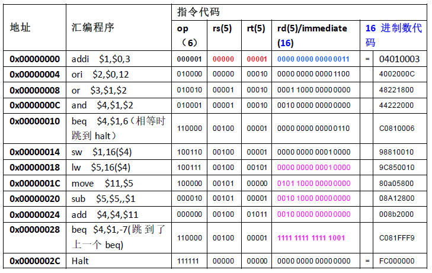
验证过程复杂繁琐，这里不一一说明。总的来说验证过程就是看每条指令执行之后寄存器以及控制信号的值是否正确，是否符合要求。
经验证，以上代码是没有bug的。如果有任何问题，欢迎指出。